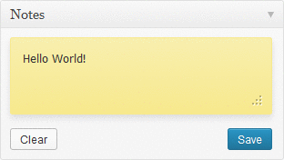

WP-Notes is a Plugin for WordPress that creates a note page in wordpress dashboard, you can type your notes in this page and save your notes.

Any improvement is welcome. You can send your pull requests in the project's github repository.
Download the latest release of WP-Notes [1.0].